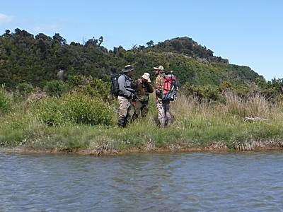

釣行日誌 ＮＺ編 「一期一会の旅：A Sentimental Journey」
珍しい出会い
11/22(THU)-3
ラグーンの半ばあたりまで渉ったところで急に深くなってきた。ディーンが
「大丈夫か？」
と振り返って僕を見てくれた。と、彼がふいに、
「ハロー！グッデイ！」
と大声で挨拶した。
『ん！？ 何だ？』

振り返ると、僕たちが渉り始めたあたりの岸辺に、２人の男の人が立っている。どうやらフィッシングガイドとそのお客さんのようだ。ディーンはザブザブと引き返して向こうのガイドさんと話しに行った。ウェストランドで釣っていて他の釣り人に出会うのは初めてだったし、まだクリスマスから新年へと続くホリデーシーズンの前だったので本当に驚いた。今朝ディーンが、
「今日の川は人気がある釣り場だからな。早めに行くぞ。」
と言っていた理由が判った。およそ15分ほども立ち話で情報交換をして、今日のこの川での釣りの区間配分などを交渉してきたディーンは、また水に入ってこちらに渉ってきた。
「ゴウ、ネルソンから来たガイドとお客だってさ。彼らには今朝車を停めた所にある大淵の上から釣ってもらうことにしたから、俺たちはこのまま釣り上がるぜ。」
僕とディーンが渉り始めると、彼らも草地を回ってこちら側に寄ってきた。少し遠目からでも、そのご年配のお客さんの顔にはやや失望の色が見て取れた。
『そりゃぁ国道から車停めまで延々と走ってきて、そこからここまで歩いてきたのに先客が居たらガックリ来るわなぁ....』
お客さんにいささか同情したものの、こっちの方が朝早く出てきたのだから、遠慮なくここから上の区間を釣らせてもらおう、などと考えつつ浅瀬を渉っていると、ディーンが急に歩みを止めた。
「ゴウ、あそこに居るのが見えるか？」
「ムムム？」
必死で目を凝らすと、対岸のヘチぎりぎりの浅場に黒い影が定位している。距離は十分僕の射程内である。後方からはネルソンのガイドさんとお客さんが興味津々で見つめている。
『これを掛けて釣り上げたら....』
ギャラリーの前でいささか緊張したが、ココロを静めてキャストの準備をし、最小限のフォルスキャストでウーリーバガーを投射する。２回目で狙い通りの位置にフライが入り、ストリッピングを始める。泳がせてきたストリーマーが鱒の鼻先を通過する瞬間にとてつもなく大きな水しぶきがバシャッと上がる。
『！！ それっ！』
すかさずロッドを立てたが、ラインには何の感触も無く、空振りに終わってしまった。
「ハハ！ やっこさん喰い損ねたな。」
ディーンが笑って声を掛ける。
『うーん....あいつも大きかった。でも、あのお客さんの目の前で釣り上げなくて良かったな。』
などと要らぬ心配とお節介を心中でつぶやきつつ、ラインを巻き取る。
渉りきって対岸へと上がり、追い風の好条件となる側へとやって来た。ふと上流を振り向くと、平野から屏風のように切り立って、冠雪したサザン・アルプスの峰々が雲の切れ間から見えた。時刻は11時を過ぎていた。
２つ目のラグーンにも何尾かの大物が居たが、まずいキャストで驚かせたり、食い気が無かったりで、結局この川の汽水域では、あれだけたくさんの鱒を見つけたのにボウズに終わってしまった。もし鰐部さんが居たなら楽に５，６尾は釣り上げていただろう。
今度はラグーンから上流へ向けて、非常にゆっくりとした下流域の流れを釣り上って行くことになった。川幅は広く茫漠としており、満潮になったらしくほとんど流速は無い。ディーンが、フライをウーリーバガーから小さな茶色のビーズヘッドニンフへと交換してくれた。インジケーターの白いウールヤーンは付けない。僕にとってはガイドの掛け声だけが頼りの、完全なブラインドの釣りとなる。
釣行日誌ＮＺ編 目次へ
サイトマップ
ホームへ
お問い合わせ